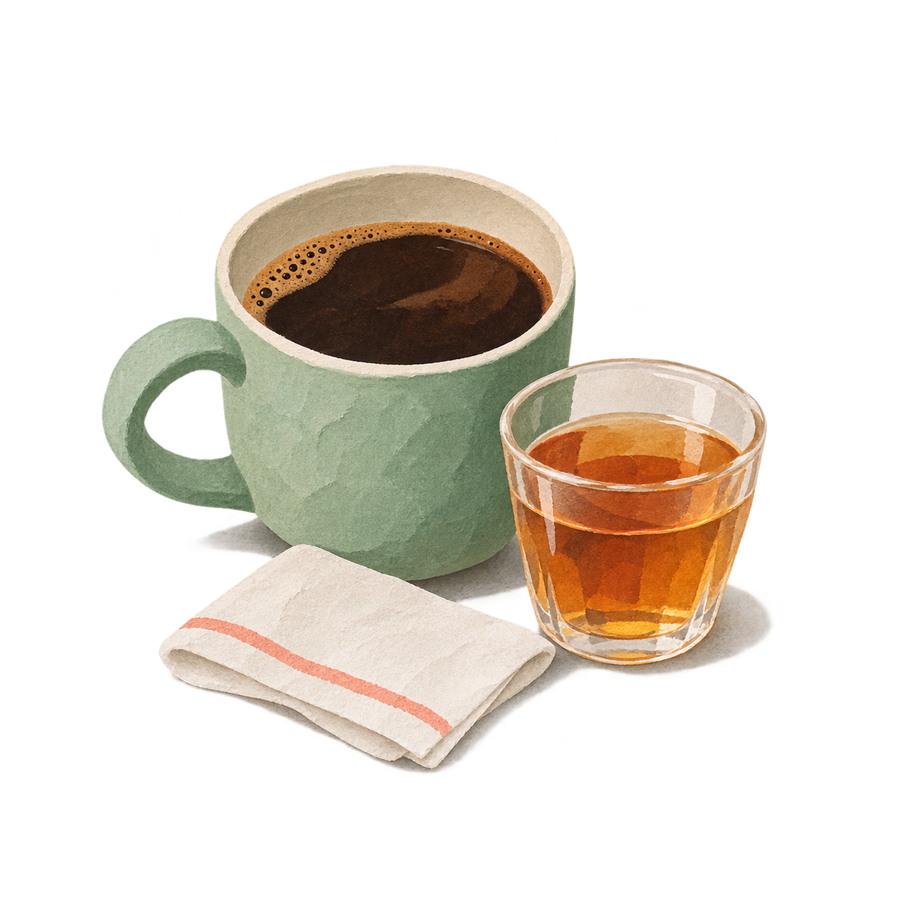

今天的饮品与睡眠
这一杯，怎么安排？

还没有今天的记录
尚未记录，不代表没有摄入。
估算依据与局限
残留量来自简化模型，不是身体实测，也不能确定你几点能睡着。饮品配方、代谢差异及其他睡眠因素都会影响结果。
今晚的睡眠预测
模型估算累计已记录的摄入
相对模型自然节律
未计入小睡
探索性模型，非身体实测；推算时间不保证能入睡，也不代表之前不能入睡。
饮用记录
0 条记录咖啡小睡
最后一杯，几点喝？
按饮品含量上限和已有摄入反推，额外预留 30 分钟。不代表这个时间前喝就不影响睡眠。
咖啡因与睡眠曲线
横轴都是时间，“次日”表示第二天。估算入睡标记不是确定能睡着的时间。
咖啡因代谢
估算浓度 · mg/L参考阈值看已记录的咖啡因还剩多少：曲线越高，模型估算的残留越多。
- 绿色实线
- 累计已记录摄入后的估算浓度。新增摄入让曲线上升，随后按代谢参数逐渐下降。
- 灰色横虚线
- 模型的参考阈值。降到线下不代表咖啡因已完全代谢，也不保证不会影响睡眠。
- 重点看这里
- 找到睡眠目标的竖虚线，看它与绿色曲线的交点在参考阈值上方还是下方。纵轴 mg/L 是估算浓度，不是喝下去的毫克数。
褪黑素与睡眠节律
相对水平 · 非实测自然节律看睡眠节律有没有后移：棕色实线比灰色虚线越晚上升，表示模型估算的节律越晚。
- 棕色实线
- 计入已记录咖啡因后的褪黑素相对水平。上升更晚表示模型中的节律后移；低于灰线表示模型中的水平被压低。
- 灰色虚线
- 不计入咖啡因影响时的模型自然节律，用来对照，不是你的身体实测基线。
- 数字代表什么
- 纵轴 0–100 只是相对刻度，不是血液浓度、睡眠时长或入睡概率。曲线升高不表示此刻一定能睡着。
清醒度变化
相对指数 · 非实测昼夜节律基线看清醒与困倦的变化趋势：实线越高，模型估算越清醒；越低，估算越困倦。
- 浅棕色实线
- 综合昼夜节律、已记录咖啡因、起床时间和小睡设置后的估算指数。
- 灰色虚线
- 单独的昼夜节律起伏，未叠加咖啡因、持续清醒和小睡的影响。
- 不是睡眠评分
- 纵轴 0–100 不是实测分数，也不能判断实际睡眠质量。模型假设起床后持续清醒，只计入设置的小睡，不自动模拟夜间睡眠恢复。
清醒度曲线假设起床后持续清醒，只计入已设置的小睡，不自动模拟夜间睡眠恢复。
留意自己的节奏
每一次调整，都有迹可循。
最近 14 天
空白表示没有记录按自己的需要
偏好与数据
饮用反应小档案
代谢档案
可以通过饮用反应自测选择初始估算参数，也可以自行选择。高级参数与基因报告可在下方设置；这些都不是身体实测。
高级参数
默认参数是模型假设，不表示已知你的基因型。睡眠反馈仅作记录，不会自动调整参数。
生物钟偏移以模型的 21:00 褪黑素起始时间为基准；基因导入沿用旧版 PER1 映射。
导入已有基因档案
沿用旧版位点映射，只用于探索性估算；原始报告在本机解析。
我的饮品
数据备份
记录保存在当前浏览器。更换设备或清除网站数据前，请导出备份。
支持旧版备份。导入会合并记录，保留现有偏好。